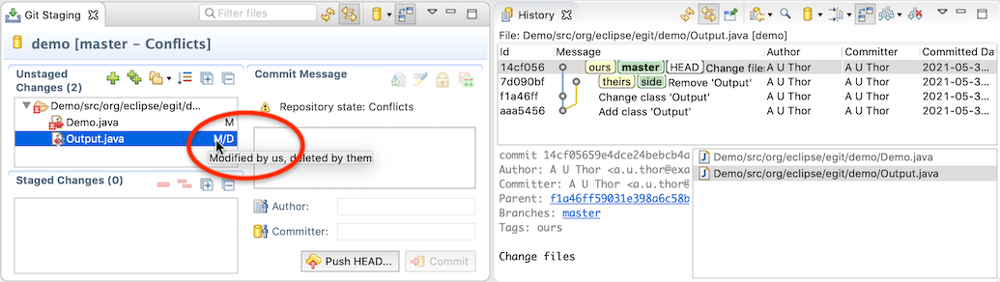
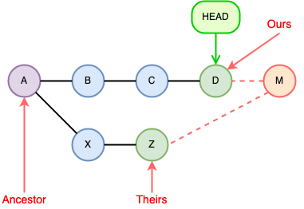
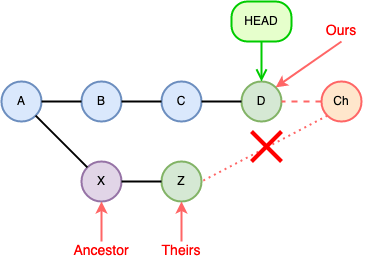
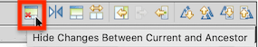
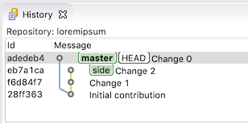
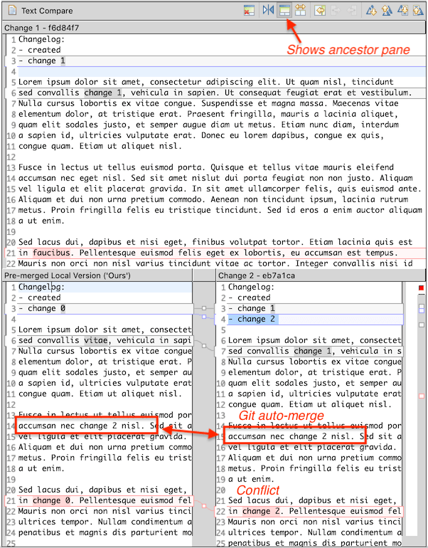
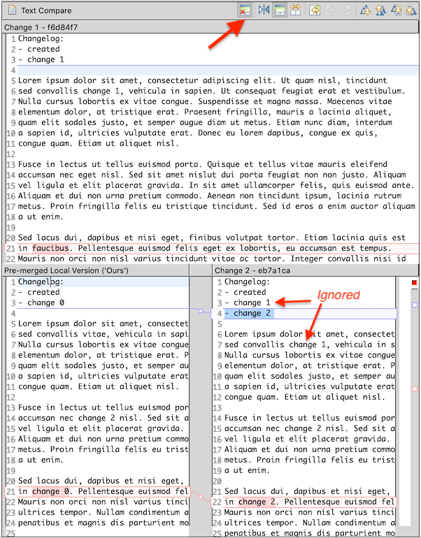
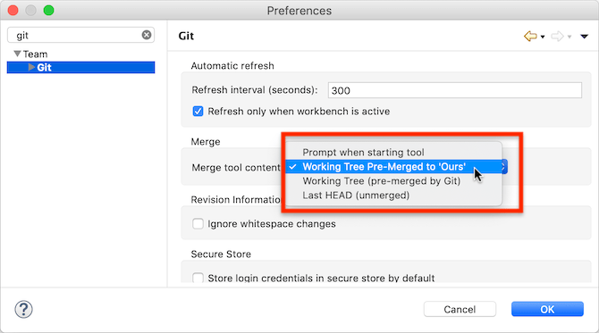
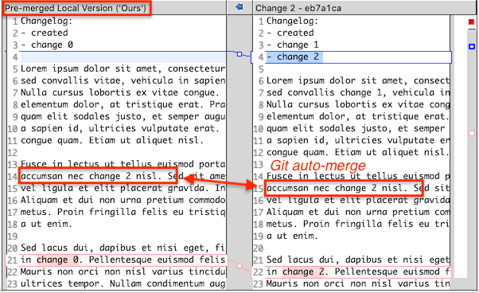
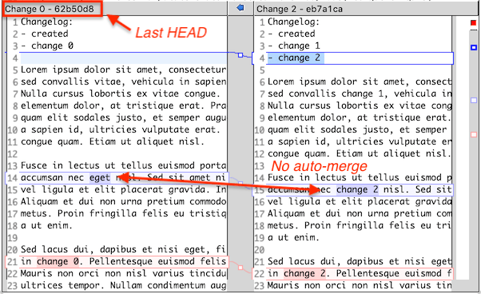

| EGit 5.12 New and Noteworthy | ||
|---|---|---|
|
|
||
| Contributors | ||
The Staging View newly shows more information about conflicts during merging, rebasing, or cherry-picking commits:

Here, branch "side" was merged into branch "master", which resulted in conflicts. The staging view now indicates the type of conflict:
The 'ours' side is HEAD before the merge, in the example branch "master", while 'theirs' is the commit being merged into 'ours', in the example branch "side". There are tags named 'ours' and 'theirs' in the history view for this example to show this clearly. (These tags were created manually; EGit does not create such tags when a merge is done.)
The Replace With→Ours/Theirs command in the context menu of such a conflicting file has been improved. For delete/modify or modify/delete conflicts it will now remove the file and stage the deletion if the file was deleted in the chosen side. (In the example, since the file was deleted in the 'theirs' side, Replace With→Theirs would delete the file.)
Additionally, Replace With→Ours/Theirs is now also available in the context menu for conflicting files in the Package or Project Explorer.
The Merge Editor has seen some improvements in EGit 5.12.
Merging two commits in git is a three-way merge between the two commits to merge and their common ancestor:

Merging Z into HEAD
When there are conflicts, the EGit merge editor shows a three-way diff between the ancestor and the two commits being merged (named "ours" and "theirs" in git). This three-way comparison identifies changes between A— D, A— Z, and D— Z and displays them in the editor.
Cherry-picking a commit also results in a three-way merge, but the ancestor is the parent commit of "theirs", i.e., of the commit being cherry-picked:

Cherry-picking Z onto HEAD
The final cherry-picked commit Ch will have only one parent D, whereas the merge commit M has two parents D and Z.
As one can see, there is no direct relation between "ours" (commit D) and the ancestor (commit X) used for this kind of merge. For a cherry-pick, the differences X—Z and D—Z are important; the differences X—D may actually be distracting and irrelevant.
EGit 5.12 adds an action to the merge editor to suppress showing these differences between "ours" and "ancestor", and by default it suppresses these differences when showing the comparison for a cherry-pick. The user can toggle this setting via a new button in the toolbar of the text comparison viewer:

When the button is selected, differences that occur only between "ours" and the ancestor are hidden from the comparison view. Otherwise, these changes are shown. For cherry-picks, EGit automatically selects it and thus hides these changes. When the left and right sides are swapped in the viewer, the little red cross in the icon will also switch sides so that it is always on the "ours" side.
Consider the following git history:

We cherry-pick commit eb7a1ca (branch "side"; Change 2) onto HEAD (branch "master"; Change 0), which results in conflicts.
|  |  |
| "ours" is left, "theirs" is right, at the top the ancestor version. All changes are shown, including changes that come from change 1 that we did not cherry-pick. | Changes that occur only between "ours" and the ancestor are hidden. The view is focused on only the changes contributed by change 2. |
Git is able to automatically merge some parts, but also encounters two conflicts, where different modifications in change 0 and change 2 occurred. The "theirs" file version from change 2 also includes the modifications that were made in change 1, but in a cherry-pick those are not relevant.
When git does a merge and encounters a conflict, it shows those conflicts in the file by inserting conflict markers, by default "<<<<<<<", "=======", and ">>>>>>>", with the two conflicting text parts from the "ours" and the "theirs" versions of the file in between. Other parts of the file may already have been merged, for instance, if another change in the same file occured only on one side.
EGit traditionally offered the user the choice of either
The latter is the version as it was in commit D in the example, without conflict markers, but also without any pre-merged bits that git might have been able to merge automatically.
EGit 5.12 introduced a third option:
This is a file that has no conflict markers, includes all the bits that git was able to merge automatically, and that uses the text from "ours" (i.e., from commit D) wherever git had detected a conflict. That's the same as git merge -X ours would have produced. Since the other side shown in the merge editor is the "theirs" version (from commit Z), this often gives the best comparison in the editor.
There is a new preference setting for this in the EGit main preferences:

Choosing "Working Tree Pre-Merged to 'Ours'" (which is also the new default) uses this new input for comparing conflicting files in the merge editor. If "Prompt when starting tool" is selected, the choice can be made each time a merge editor is opened.
Best results are usually obtained with this new setting, or sometimes with "Last HEAD (unmerged)".
|  |  |
| With "Working Tree Pre-Merged to 'Ours'" as input | With "Last HEAD (unmerged)" as input |
As the "Last HEAD (unmerged)" version is just the version from commit D, all differences show up as changes. The user has to manually merge any differences; no automatic merging by git is applied. This may be helpful if the automatic merging by git produces unexpected results, which can happen sometimes.
EGit 5.12 offers new API giving third-party bundles access to git information.
The org.eclipse.egit.core bundle offers the following new interfaces and classes:
org.eclipse.egit.core.info.GitInfo: this accessor interface can be obtained via adaptation using
Adapters.adapt(
someObject, GitInfo.class);
. Via the interface, clients can determine the JGit Repository the item is in, its path within the repository, whether it is from the working tree, the git index, or a commit (and if so, which commit), and what its git state is.
org.eclipse.egit.core.info.GitItemState: this can be obtained via GitInfo.getGitState() and tells the git state for the item in the git repository at that path. This can be used to determine whether the item has staged changes in the index, whether it was modified in the working tree only, whether it is in a conflict state, and so on. (Client code can also obtain such information given the repository and the git path by using JGit directly and looking up the information directly in the git index. GitItemState may be more efficient since it uses an optimized cache inside EGit that EGit uses internally, too.)org.eclipse.egit.core.revisions.FileRevisionFactory exposes factory methods to create org.eclipse.team.core.history.IFileRevision objects for items in the git index or in a git commit. This is useful if client code wants to compare items from a git repository.org.eclipse.egit.core.util.RevCommitUtils offers some utility methods; in particular a method to determine the "theirs" commit in a conflict.Existing client code is strongly encouraged to use this new API instead of accessing EGit internal non-API classes directly.
EGit 5.12 includes some less noticeable improvements in the UI, plus a number of bug fixes. The complete list of new features and bug fixes is available in the release notes.
|
|
||
| Contributors |